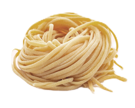
01
Спагетти
Spaghetti
Королева итальянской пасты. Длинные, тонкие цилиндры совершенны для болоньезе и карбонары. Их история — история самой Италии.
cibo alla moda italiana
Изделия различной формы из высушенного теста
В каждом изгибе макаронины — веками накопленная мудрость итальянских мастериц. Каждая форма создана не случайно: она рождена для определённого соуса, для особого способа подачи, для совершенства во рту.
Пятнадцать шедевров итальянского макаронного искусства

Spaghetti
Королева итальянской пасты. Длинные, тонкие цилиндры совершенны для болоньезе и карбонары. Их история — история самой Италии.
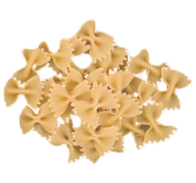
Farfalle
Бабочки из теста. Их изгибы созданы для того, чтобы удерживать капли соуса в каждой складке. Идеальны с легкими сливочными соусами.
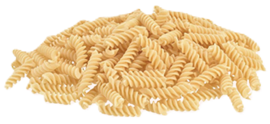
Fusilli
Винтовые спирали, созданные природой для захвата соуса. Каждый оборот — маленькое произведение искусства песто и томатов.
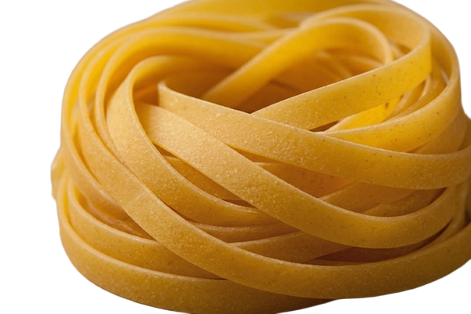
Fettuccine
Ленточки шириной в палец. Их нежная текстура раскрывается в классической альфредо, обволакивая каждый кусочек пармезана.
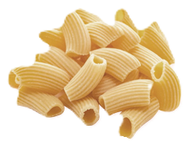
Rigatoni
Толстые рифлёные трубки. Их рубцы — ловушки для густых мясных соусов. Итальянский характер в каждом укусе.
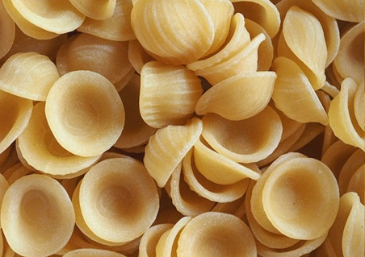
Orecchiette
Ушки, вылепленные вручную. Каждое — уникально, как отпечаток пальца. Созданы для брокколи рабе и оливкового масла.
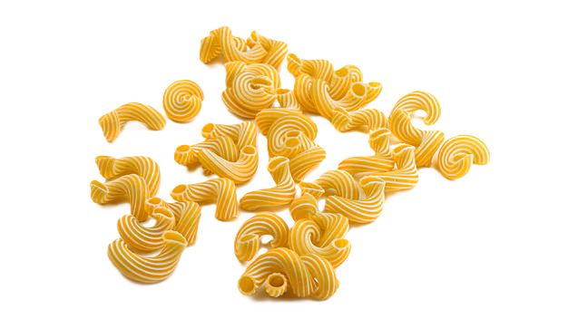
Cavatappi
Винтовые макароны-трубки. Игривые изгибы приглашают соус войти в каждый завиток. Весёлые и неотразимые.
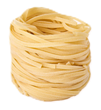
Linguine
Язычки — уплощённые длинные макароны. Их плоская форма идеальна для морепродуктов и лимонного соуса с анчоусами.
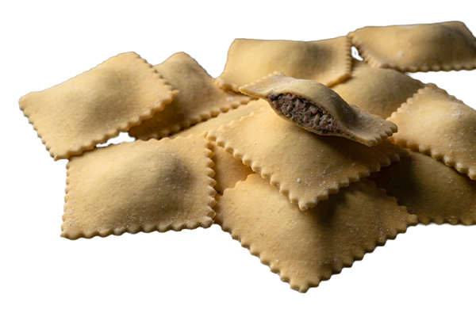
Ravioli
Маленькие подушечки с начинкой. В каждом квадратике — сокровенность: рикотта, шпинат, грибы или мясо. Целое искусство в одном укусе.
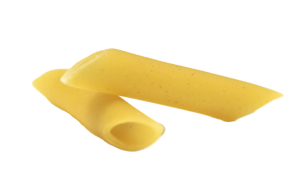
Penne
Перья, срезанные под углом 45°. Их скошенные края — идеальные ловушки для густых томатных соусов. Солнечная Италия в каждом кусочке.
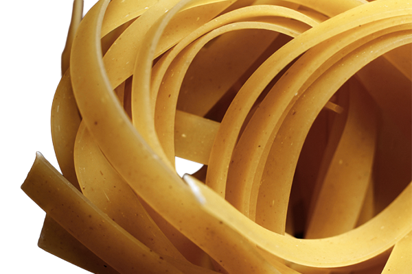
Tagliatelle
Широкие ленты, нарезанные вручную. Их текстура — классика болонской кухни. Созревшие яйца и мука — вот их секрет.
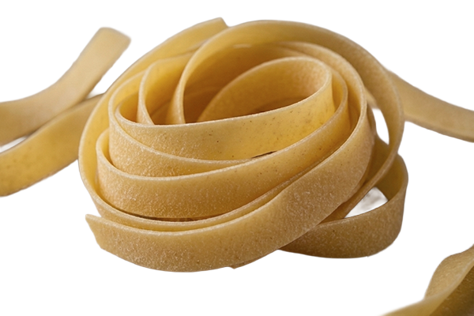
Pappardelle
Очень широкие ленты — объятия для соуса. Рождены для дикой лесной говядины и трюфельных сливочных соусов Тосканы.
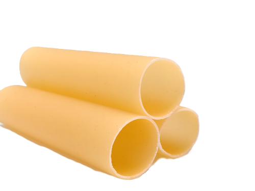
Cannelloni
Большие трубки, созданные для фарширования. Внутрь кладут мясо, рикотту, шпинат — и запекают до золотой корочки.
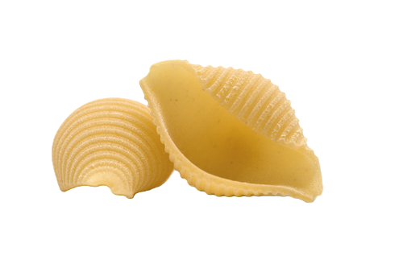
Conchiglie
Раковины, созданные морями Сицилии. Их полость — храм для сливочных соусов. Каждая ракушка — миниатюрный сосуд наслаждения.
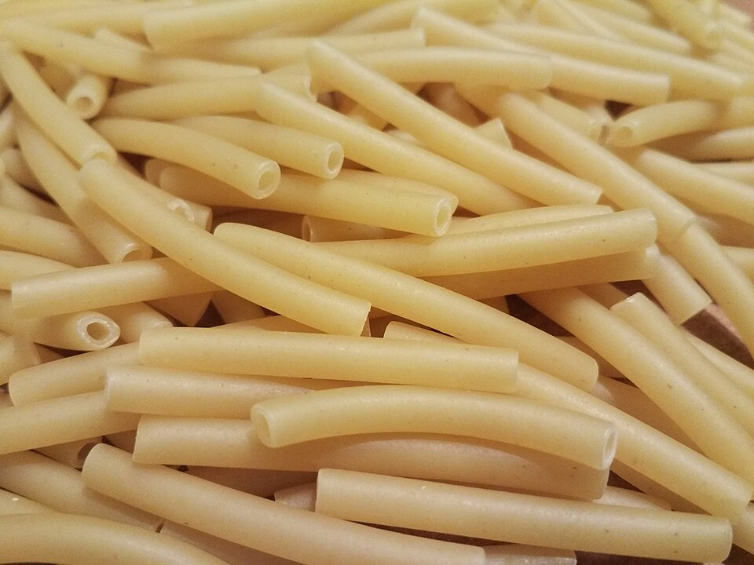
Maccheroni
Короткие изогнутые трубочки — сердце неаполитанской кухни. Их форма идеальна для сытных запеканок и молодых соусов.
Как называется эта форма?